리소스 중심 설계와 예측 가능한 URL
영상은 API를 이해하기 쉽고, 붙이기 쉽고, 유지보수하기 쉽게 만드는 REST 패턴 여덟 가지를 차례로 소개해요. 처음 두 가지는 URL을 어떻게 짓느냐에 관한 거예요.
1. 동작이 아니라 리소스를 중심으로
흔한 실수는 /getUsers, /createOrder, /deleteProduct처럼 URL에 동작을 적는 거예요. 얼핏 보면 알아보기 쉬워요. 그런데 HTTP 메서드가 이미 동작을 말하고 있어서, POST /createOrder는 '만든다'를 두 번 말하는 셈이에요.
URL에는 users, orders, products 같은 리소스만 두고, 무엇을 할지는 GET·POST·DELETE에 맡기면 돼요. 그러면 리소스 세 개와 메서드 세 개가 표처럼 깔끔하게 맞물려요.
API가 커질수록 이 차이가 커져요. 주문 하나를 조회하든 교체하든 삭제하든 URL은 /orders/{id} 하나로 충분하거든요. 동작마다 /getOrder, /updateOrder, /cancelOrder를 새로 만들 필요가 없어요.
Let the URL identify the resource and let the HTTP method describe the operation.
URL은 리소스를 가리키고, HTTP 메서드는 동작을 설명하게 하세요.
— 영상 00:32
2. URL을 예측할 수 있게
사소해 보여도 차이가 큰 게 이름의 일관성이에요. 한쪽은 /user/4821, 다른 쪽은 /customers/4821, 또 다른 쪽은 /customerProfiles/4821을 쓰면 각각은 잘 동작해요. 하지만 개발자는 '여긴 단수, 저긴 customers'라는 규칙을 외워야 해요.
컬렉션은 users, orders, products처럼 같은 방식으로 이름 붙이고, 개별 리소스는 그 뒤에 식별자를 붙여요. 여러 단어로 된 이름도 규칙 하나를 골라 어디서나 써요. 영상 화면은 order-items, order_items, orderItems 가운데 스네이크 케이스 하나를 골라 모든 경로에 적용하는 모습을 보여 줘요.
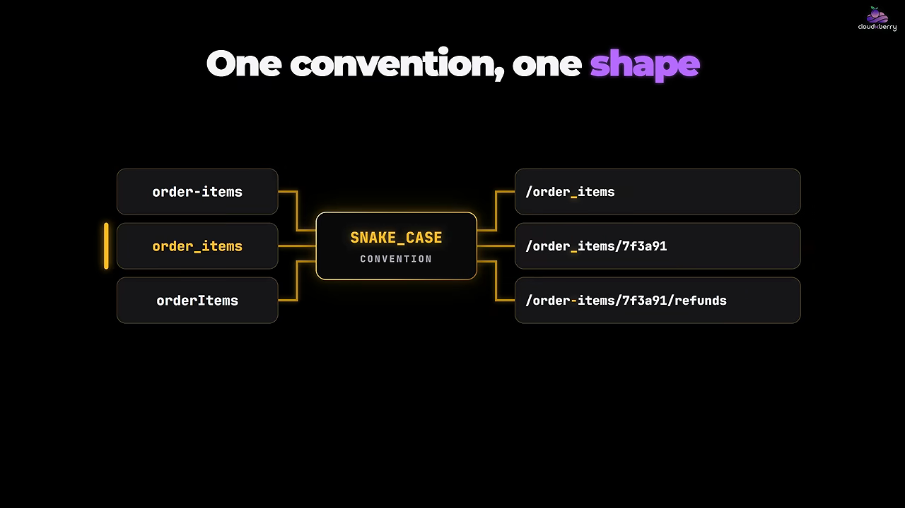
영상의 말대로, 예측할 수 있는 API는 설명이 덜 필요해요.
HTTP 메서드는 정해진 뜻대로
사용자 정보를 고치는 API가 어떤 곳은 POST, 어떤 곳은 PUT, 또 어떤 곳은 PATCH를 쓴다고 해 볼게요. 셋 다 기술적으로는 동작해요. 하지만 클라이언트는 표준 HTTP의 시맨틱 대신 API마다 다른 규칙 세 개를 배워야 해요. 표준대로 쓰면 배울 규칙이 0개예요.
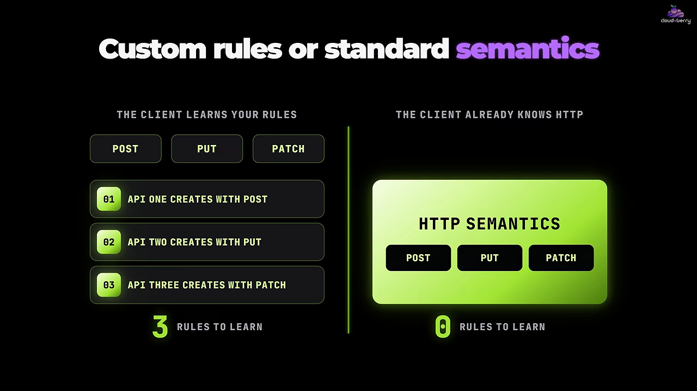
영상이 정리한 메서드별 역할은 이래요.
| 메서드 | 하는 일 | 같은 요청을 반복하면 |
|---|---|---|
| GET | 리소스를 바꾸지 않고 읽어요 | 효과가 한 번 보낸 것과 같아요 |
| POST | 새 리소스를 만들거나, 단순 수정으로 표현하기 어려운 처리를 시작해요 | 리소스가 또 생길 수 있어요 |
| PUT | 리소스 표현을 통째로 바꿔요 | 효과가 한 번 보낸 것과 같아요 |
| PATCH | 일부만 고쳐요 | 영상에서 따로 다루지 않아요 |
| DELETE | 리소스를 지워요 | 효과가 한 번 보낸 것과 같아요 |
멱등성이 왜 중요할까요
표의 마지막 열이 멱등성이에요. GET을 다섯 번 보내도 레코드는 그대로예요. PUT으로 같은 값을 두 번 넣어도, DELETE를 두 번 보내도 결과는 한 번 했을 때와 같아요. 반면 POST로 같은 주문 생성 요청을 두 번 보내면 주문이 두 건 생길 수 있어요.
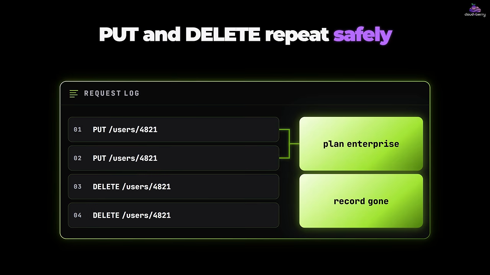
이게 실무에서 문제가 되는 이유는 네트워크가 끊기고, 클라이언트가 재시도하고, 타임아웃이 생기기 때문이에요. 요청이 반복돼도 API가 예측대로 움직여야 해요. 그래서 영상은 엔드포인트가 동작한다는 이유로 메서드를 고르지 말고, 메서드가 원래 뜻하는 바에 맞춰 고르라고 해요.
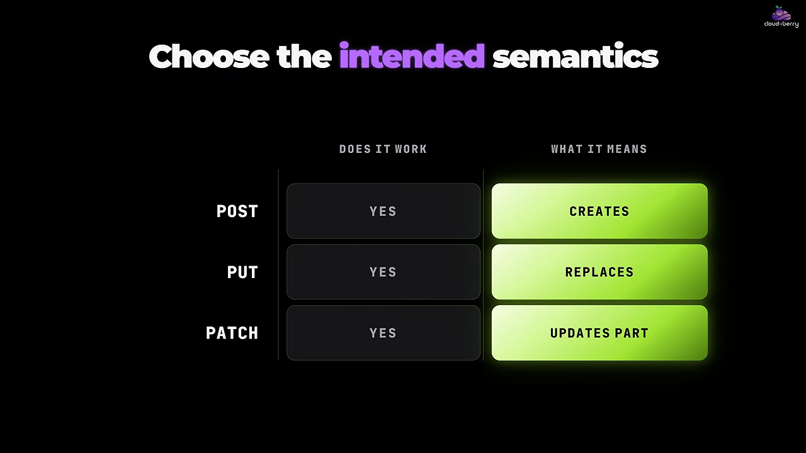
상태 코드와 에러 응답이 결과를 말하게
4. 상태 코드가 결과를 말하게
상품이 없어서 실패했는데 200 OK를 돌려주고, 본문에 '실패'라고 적는 API가 있어요. 상태 줄은 성공이라고, 본문은 실패라고 말해요. 클라이언트는 어느 쪽이 맞는지 두 군데를 다 확인해야 해요. 그럴 필요가 없게, 큰 결과는 상태 코드 하나로 전하라는 거예요.
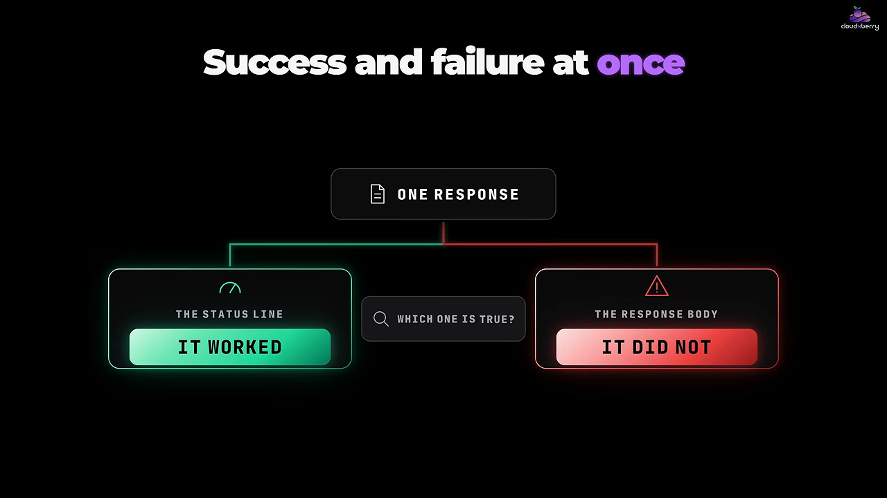
영상이 예로 든 상태 코드를 표로 정리했어요.
| 코드 | 언제 쓰나요 |
|---|---|
| 200 | 읽기에 성공했을 때 |
| 201 | 리소스를 만들었을 때 |
| 202 | 요청을 받았고, 처리는 비동기로 나중에 끝날 때 |
| 204 | 성공했지만 돌려줄 본문이 없을 때 |
| 400 | 요청 자체가 잘못됐을 때 |
| 401 | 인증 정보가 없거나 잘못됐을 때 |
| 403 | 인증은 됐지만 권한이 없을 때 |
| 404 | 요청한 리소스가 없을 때 |
| 409 | 요청이 리소스의 현재 상태와 충돌할 때 |
| 422 | 비즈니스 검증에 실패했을 때 |
| 429 | 클라이언트가 요청을 너무 많이 보낼 때 |
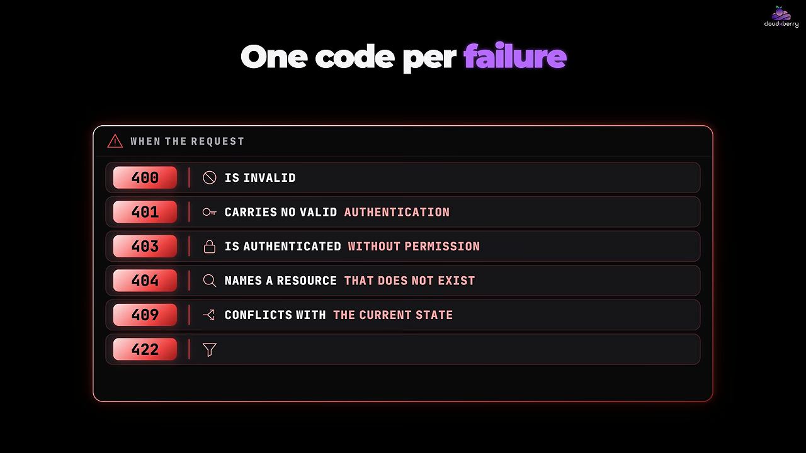
코드를 전부 외우라는 말은 아니에요. HTTP가 이미 정해 둔 코드를 두고 그 위에 나만의 에러 규약을 새로 만들지 말라는 거예요.
5. 에러 응답은 한 가지 구조로
상태 코드는 실패의 종류만 알려 줘요. 클라이언트는 보통 그보다 많은 정보가 필요해요. '문제가 생겼어요' 한 줄짜리 에러와, 에러 코드·읽을 만한 메시지·상태가 들어 있는 구조화된 응답을 비교하면 뒤쪽이 사람과 프로그램 모두에게 훨씬 쓰기 좋아요.
{
"code": "PRODUCT_NOT_FOUND",
"message": "No product with id 2048"
}구조가 있으면 쓰는 쪽마다 필요한 필드만 골라 써요. 화면은 message를 보여 주고, 애플리케이션은 code에 따라 분기하고, 개발자는 status로 원인을 추적해요. 입력 검증에 실패했다면 '잘못된 요청'이라고만 하지 말고 어떤 필드를 고쳐야 하는지도 알려 주면 좋아요.
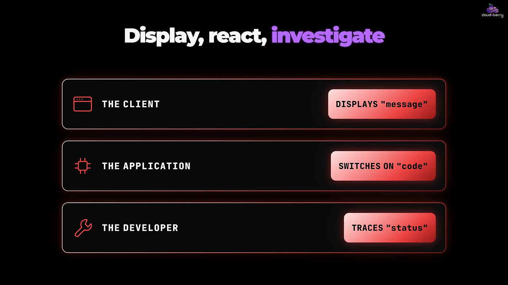
정확한 형식은 시스템마다 달라도 돼요. 중요한 건 에러가 구조를 갖추고 늘 같은 모양이어서, 클라이언트가 무엇이 잘못됐는지 추측할 필요가 없게 하는 거예요.
경로와 쿼리의 역할, 그리고 API 변경
6. 모든 걸 경로에 넣지 않기
/products로 시작해서 카테고리를 경로에 붙이고, 그다음 재고 상태, 가격, 검색어, 정렬까지 붙이다 보면 URL이 점점 감당하기 어려워져요. 필터나 선택 조건은 쿼리 파라미터가 더 잘 맞아요. 경로는 어떤 리소스인지 가리키고, 쿼리 파라미터는 그 리소스를 어떤 모습으로 받을지 좁혀요.
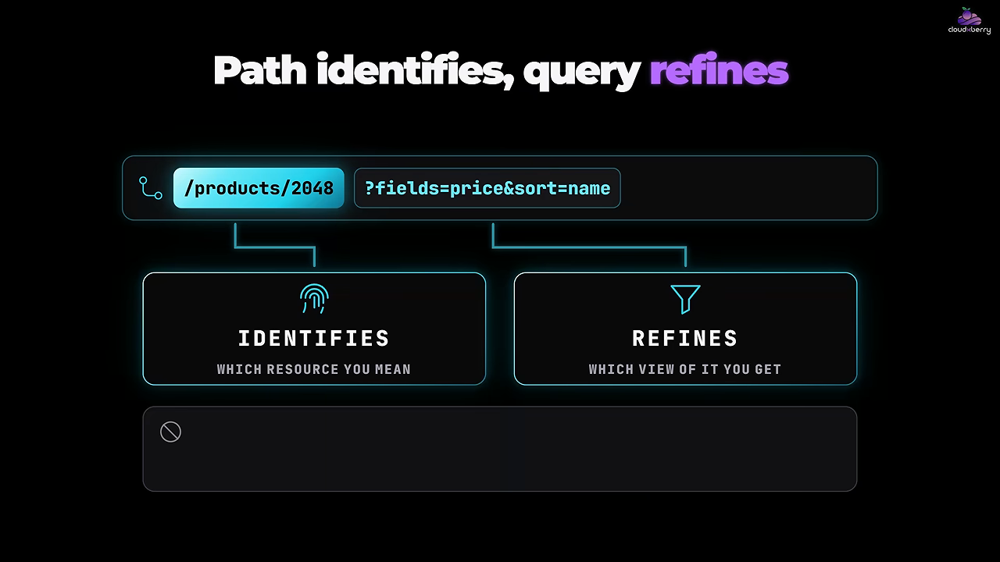
그렇다고 쿼리로 동작을 만들어 내면 안 돼요. GET /products/2048?action=delete는 메서드는 읽기라고 하는데 쿼리는 삭제라고 해요. 요청 하나가 두 가지 말을 하니 무슨 일이 일어날지 알 수 없어요.
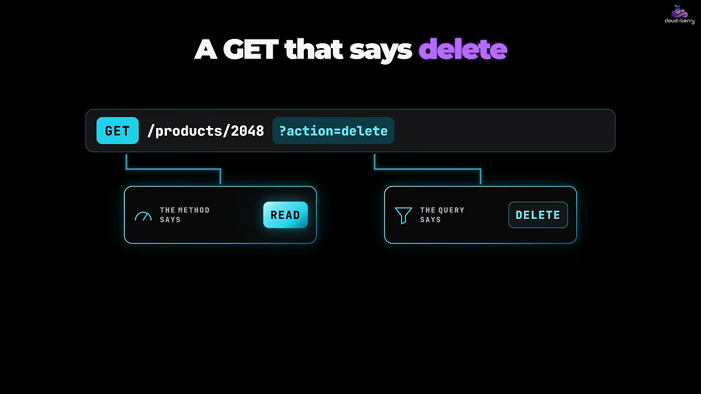
역할을 정리하면 세 줄이에요. 경로는 리소스를 가리키고, 쿼리 파라미터는 결과를 좁히고, HTTP 메서드는 동작을 말해요.
7. API 변경은 조심스럽게
API는 영원히 그대로 있지 않아요. 지금 완벽해 보이는 응답도 6개월 뒤엔 필드를 더하거나 구조를 바꾸거나 잘못된 의미를 고쳐야 할 수 있어요. 위험한 건 기존 클라이언트를 생각하지 않고 브레이킹 체인지를 내는 거예요.
영상의 예는 이래요. 예전 버전은 "price": 49.00처럼 숫자 하나를 돌려줬어요. 나중에 이걸 pricing.amount가 든 더 풍부한 구조로 바꾸고 싶어졌어요. 이건 필드 하나 추가가 아니라 구조 변경이라 기존 클라이언트가 깨질 수 있어요.
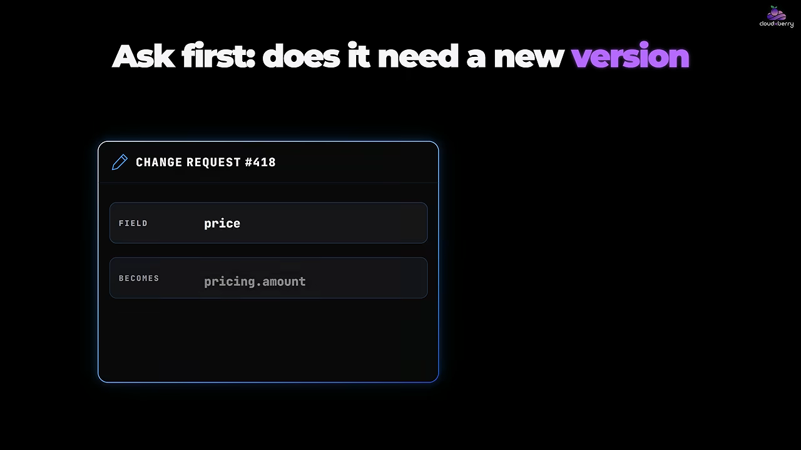
그래서 먼저 새 버전이 정말 필요한지 따져요. 필수가 아닌 필드를 추가하는 건 보통 기존 클라이언트를 깨지 않아요. 기존 동작을 바꾸거나 없애면 깰 수 있어요.
버전이 필요하다면 방식을 분명하고 일관되게 정해요. URL에 버전을 넣을 수도 있고, 요청 헤더로 고를 수도 있고, 다른 잘 알려진 방법을 써도 돼요. 어떤 방식이냐보다 예측 가능한 한 가지를 쓰고, 사용자가 옮겨 갈 길을 열어 주는 게 중요해요.
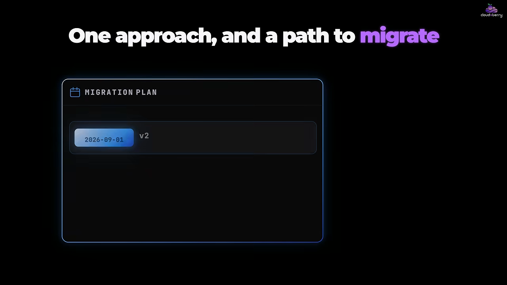
화면에는 이전 계획의 예도 나와요. 2026-09-01에 v2를 공개하고, 2027-03-01에 v1을 지원 중단으로 바꿔 모든 응답에 경고를 담고, 2027-09-01에 v1을 없애요. 12개월의 예고 기간을 두는 거예요.
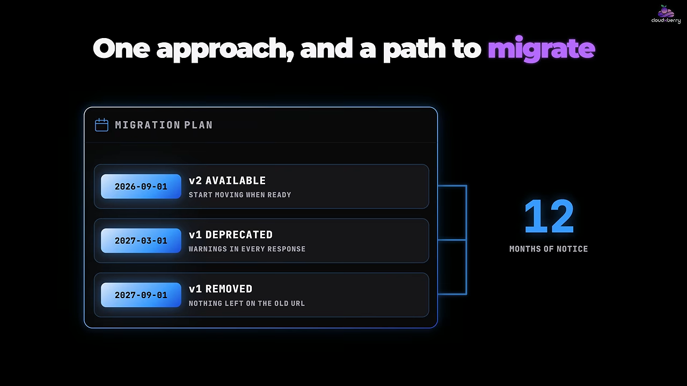
Good API evolution means existing clients don't become collateral damage.
좋은 API 진화란 기존 클라이언트가 덩달아 피해를 입지 않는 거예요.
— 영상 06:40
형식을 맞추고, 패턴부터 정하기
8. 요청과 응답 형식을 맞추기
개발자들이 쉽게 얕보는 부분이에요. 한 엔드포인트는 createdAt, 다른 곳은 CreatedAt, 또 다른 곳은 created_at을 돌려준다고 해 볼게요. 셋 다 틀린 건 아니에요. 하지만 클라이언트 코드에는 URL마다 다른 키를 고르는 분기가 세 개 생겨요.
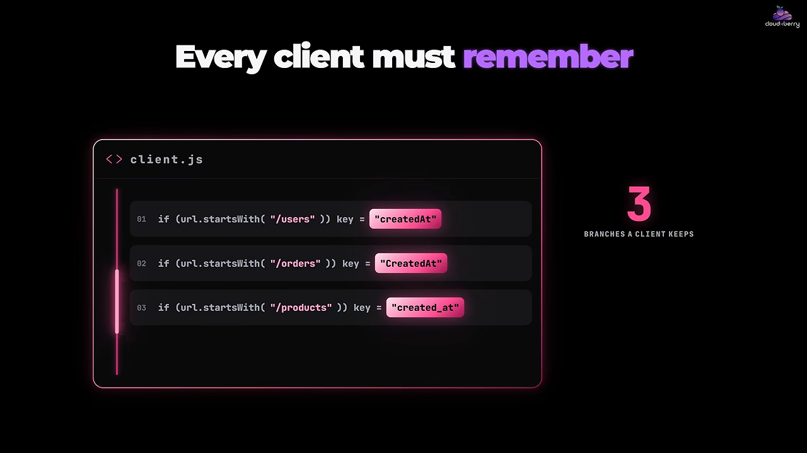
날짜, 페이지네이션, 에러 응답, 필드 이름, 응답 구조에서도 똑같은 일이 생겨요. 그래서 규칙을 정하고 지켜요. JSON을 일관되게 쓰고, JSON 필드 이름 규칙을 하나로 정하고, 에러 응답을 표준화하고, 페이지네이션과 필터링이 어디서나 같은 방식으로 동작하게 해요. 화면의 예시는 형식은 JSON, 필드 이름은 카멜 케이스, 에러는 code·message·status로 정했어요.
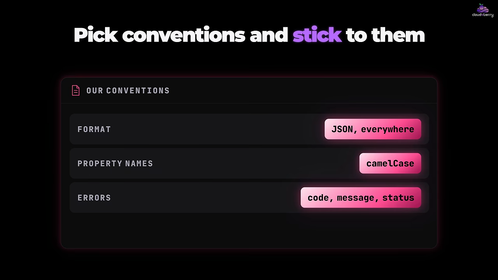
목표는 거대한 규칙집이 아니에요. 다음 엔드포인트가 낯설지 않게 하는 거예요. 엔드포인트 하나를 익히면 나머지도 어떻게 동작할지 짐작할 수 있어야 해요.
Consistency is one of the best features an API can have.
일관성은 API가 가질 수 있는 가장 좋은 기능 중 하나예요.
— 영상 07:45
REST를 따르는 것보다 중요한 것
영상은 마지막에 한 가지를 덧붙여요. 많은 개발자가 API가 기술적으로 REST를 따르는지에 집중하는데, 그게 가장 중요한 목표는 아니라는 거예요. GET·POST·PUT·DELETE를 쓴다고 좋은 API가 되진 않아요. 좋은 API는 문서를 계속 확인하지 않아도 클라이언트가 이해할 수 있는 API예요.
영상이 꼽은 조건을 다시 모으면 여섯 가지예요. 리소스 이름이 말이 되고, 메서드가 예측대로 동작하고, 상태 코드에 뜻이 있고, 에러 구조가 같고, 필터가 엔드포인트마다 같은 방식으로 동작하고, 변경이 기존 사용자를 갑자기 깨지 않아요.
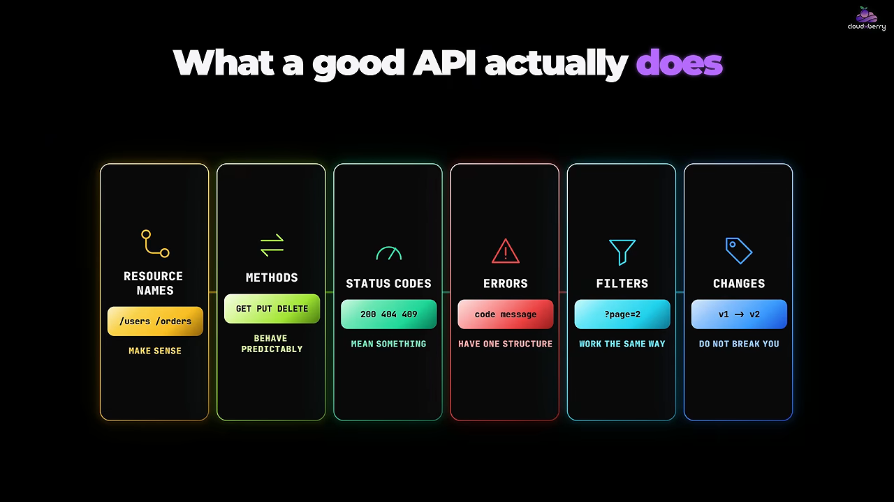
엔드포인트보다 패턴을 먼저
그래서 다음 REST API를 설계할 땐 엔드포인트를 하나씩 만들지 말고, 패턴부터 정하라고 해요. 먼저 답할 질문은 여덟 개예요.
| 번호 | 먼저 정할 질문 |
|---|---|
| 1 | 리소스 이름을 어떻게 지을까요? |
| 2 | 컬렉션을 어떻게 표현할까요? |
| 3 | 필터링은 어떻게 동작할까요? |
| 4 | 어떤 HTTP 메서드를 쓸까요? |
| 5 | 에러는 어떤 모양일까요? |
| 6 | 상태 코드는 어떻게 다룰까요? |
| 7 | API는 어떻게 바뀌어 갈까요? |
| 8 | 모든 엔드포인트가 따를 규칙은 뭘까요? |
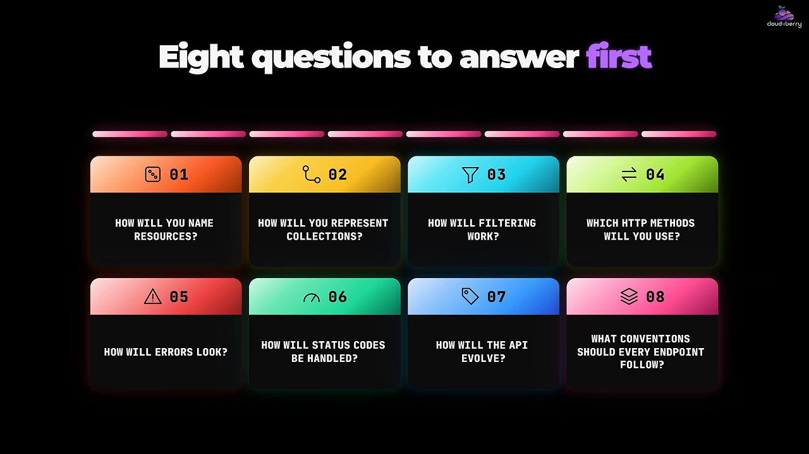
A good REST API doesn't just return the right data. It makes the right way to use it obvious.
좋은 REST API는 맞는 데이터를 돌려주는 데서 그치지 않아요. 올바른 사용법을 뻔히 보이게 만들어요.
— 영상 08:51